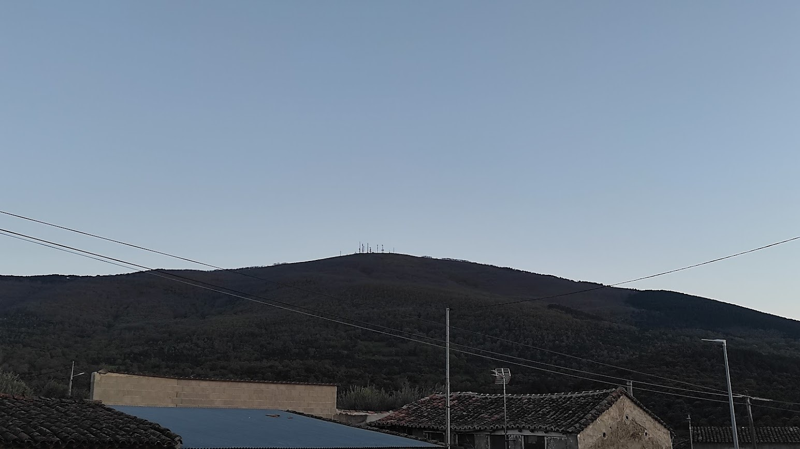

Almendral de la Cañada
Enviar PostalAlmendral de la Cañada es un municipio y localidad española de la provincia de Toledo, en la comunidad autónoma de Castilla-La Mancha. Cuenta con una población de 322 habitantes (INE 2022).
Su nombre fue el de "Almendral de Arriba" hasta 1916 que cambió por el actual, en referencia a la Cañada Real Leonesa que pasa por la población.
Ubicación.- La localidad está situada a una altitud de 630 m s. n. m..34 El municipio se encuentra situado en la comarca de Sierra de San Vicente y linda con los términos municipales de La Iglesuela del Tiétar, El Real de San Vicente, Navamorcuende y Sartajada.
